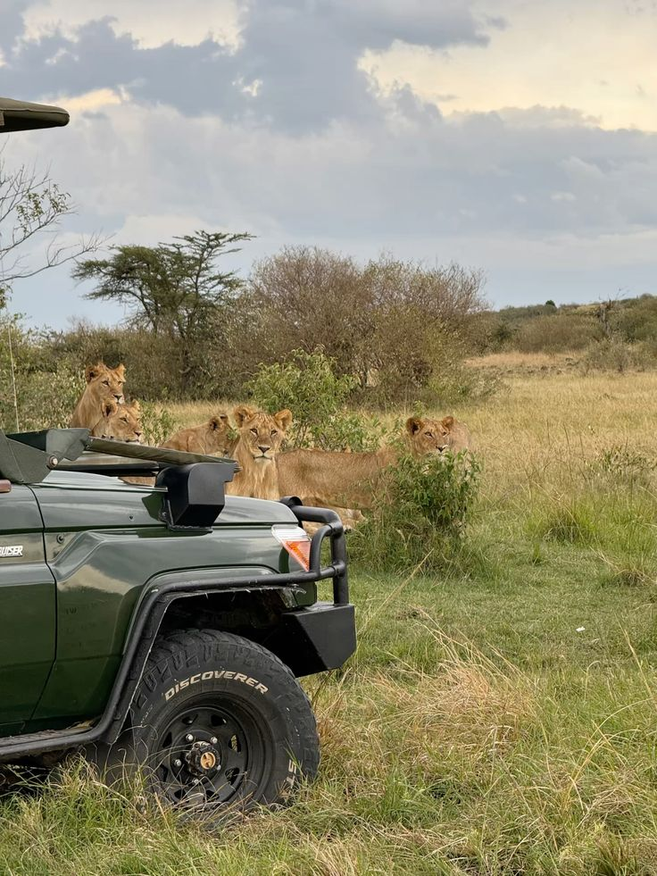
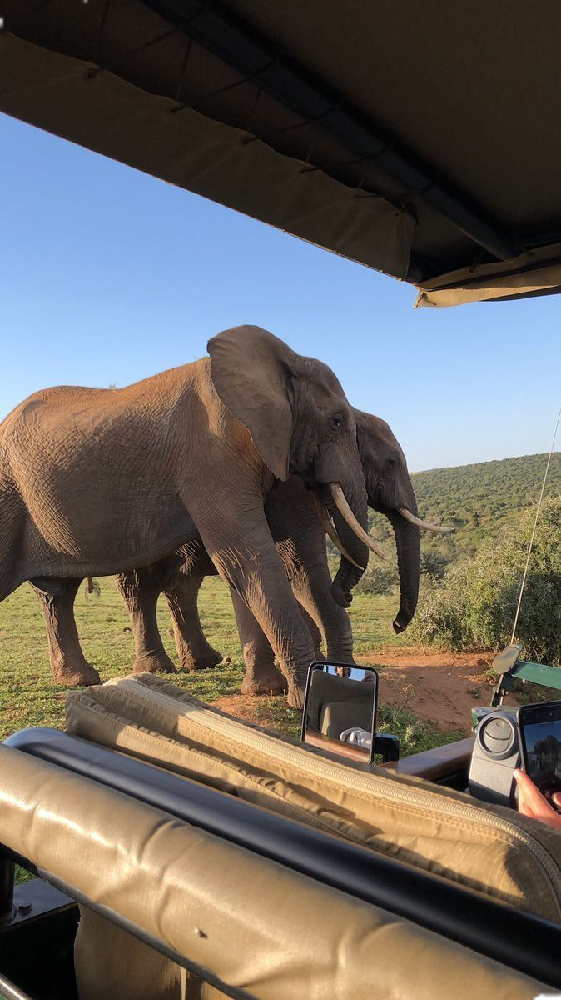
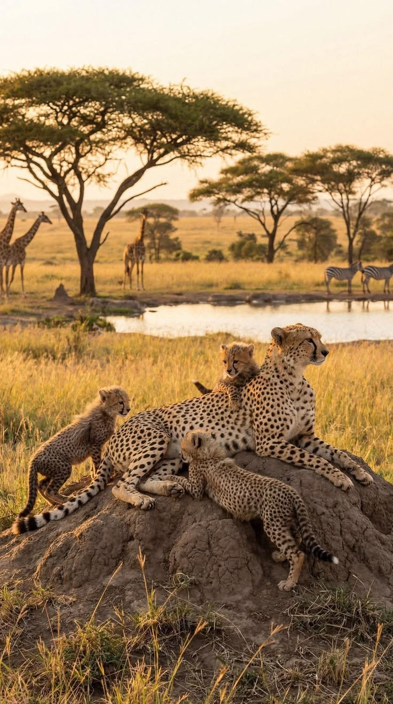
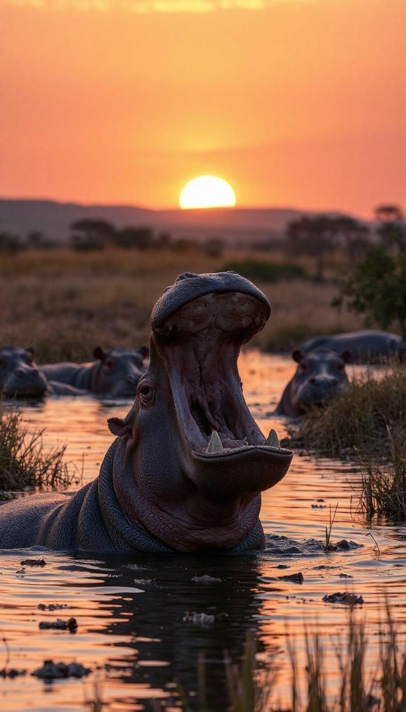
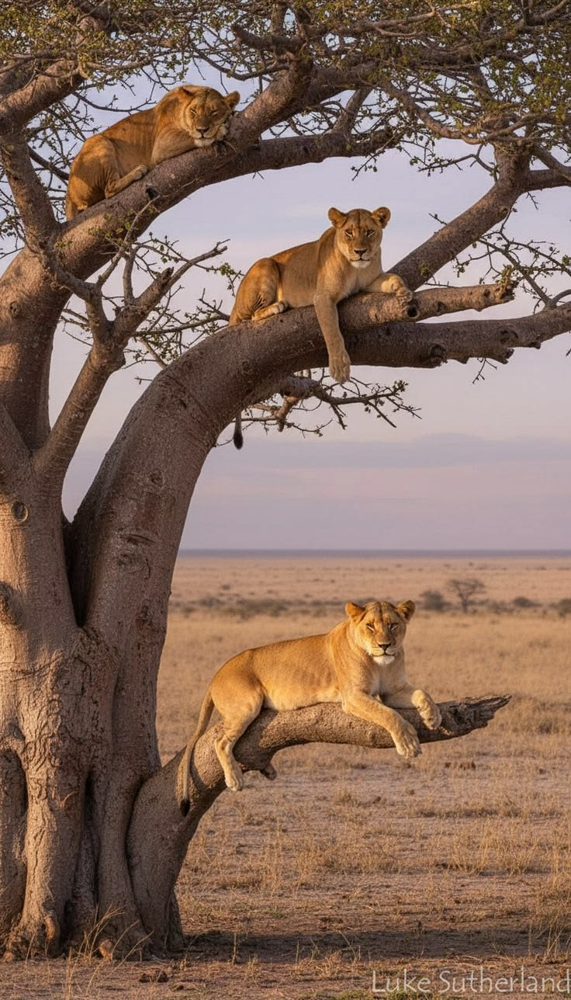
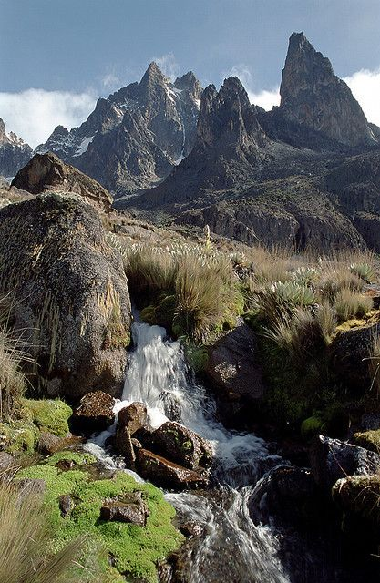
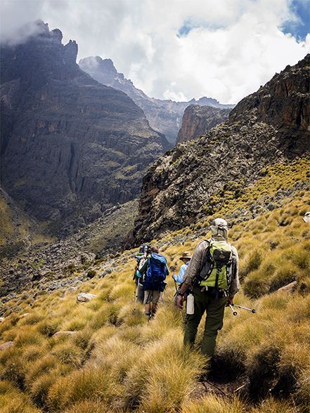

Safari Packages
Explore our hand-crafted East African safari experiences.
Kenya Safaris
 BESTSELLER
BESTSELLER
3 Days Masai Mara Safari
Kenya • Masai MaraExperience the Big Five in Kenya’s most iconic wildlife reserve with expert guides.
 POPULAR
POPULAR
7 Days Kenya Wildlife Safari
Kenya • Safari CircuitExplore Masai Mara, Lake Nakuru and Amboseli in one unforgettable wildlife journey.
 BUDGET SAFARI
BUDGET SAFARI
5 Days Kenya Budget 4X4 Jeep Camping Safari
Kenya • Masai Mara • Lake Nakuru • Lake NaivashaExplore Kenya's top safari destinations on an affordable camping adventure in a 4x4 Land Cruiser.

BUDGET4 Days Kenya Budget 4x4 Safari
Kenya • Masai Mara • Lake NakuruExperience Kenya's famous savannahs and soda lakes on an affordable 4-day safari featuring thrilling game drives in Masai Mara and rhino tracking in Lake Nakuru National Park.
 LUXURY
LUXURY
8 Days Kenya Luxury Lodge Safari
Kenya • Amboseli • Aberdare • Nakuru • Masai MaraDiscover Kenya's premier wildlife destinations while staying in luxury safari lodges. Experience Amboseli, Aberdare, Lake Nakuru and the world-famous Masai Mara on an unforgettable safari.

LUXURYThe Essence of Kenya: 10 Days of Luxury Safari & Adventure
Kenya • Nairobi • Amboseli • Mt Kenya • Nakuru • Naivasha • Masai MaraDiscover Kenya in ultimate comfort with luxury lodges, spectacular wildlife, breathtaking landscapes, the Big Five, flamingo-filled lakes and unforgettable safari adventures across Kenya's finest national parks.


Kenya - Tanzania Safaris
PREMIUM
7 Days Kenya & Tanzania Safari
Kenya • Tanzania CircuitCross Serengeti, Ngorongoro Crater and Masai Mara in one epic safari experience.

Group Safari12 Days Kenya & Tanzania Circuit Group Safari
Kenya • TanzaniaExperience an unforgettable 12-day safari through Kenya and Tanzania, exploring East Africa’s iconic wildlife destinations.
USD $4,847

4x4 SAFARI13-Day Kenya & Tanzania 4x4 Jeep Safari: From Savannah to Serengeti
Kenya • Maasai Mara • Lake Nakuru • Amboseli • Tanzania • Ngorongoro • Serengeti • TarangireJourney from Kenya's legendary savannahs into Tanzania's spectacular wilderness on an unforgettable 13-day 4x4 safari featuring Maasai Mara, Amboseli, Serengeti, Ngorongoro and Tarangire.

MID-RANGE11 Days Kenya & Tanzania Classic Mid-Range Jeep Safari
Kenya • Tanzania • Maasai Mara • Lake Nakuru • Amboseli • Serengeti • NgorongoroExperience the best of Kenya and Tanzania on an unforgettable 11-day mid-range 4x4 safari through spectacular landscapes, iconic national parks and some of East Africa's richest wildlife destinations.
Mountain Trekking Tours

MODERATE TREKSirimon Summit: 4-Day Mount Kenya Trekking Adventure
Kenya • Mount Kenya National ParkTrek the scenic Sirimon Route on a 4-day adventure through Mount Kenya National Park, Africa's second-highest peak.

MODERATE TREKConquer Mount Kenya: 5-Day Trek via Sirimon–Chogoria Route
Kenya • Mount KenyaSummit Point Lenana on this 5-day traverse of Mount Kenya, ascending via the Sirimon route and descending through the scenic Chogoria route.